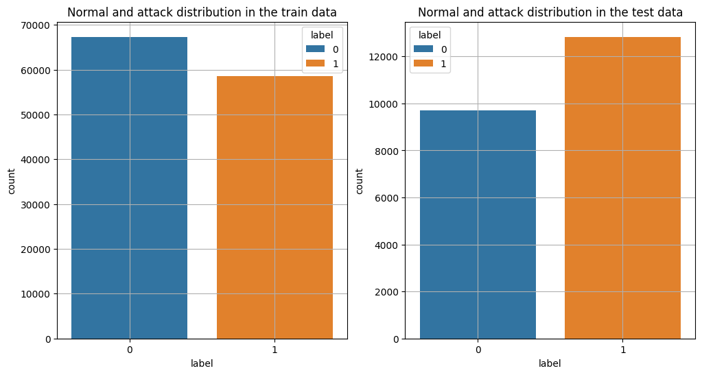
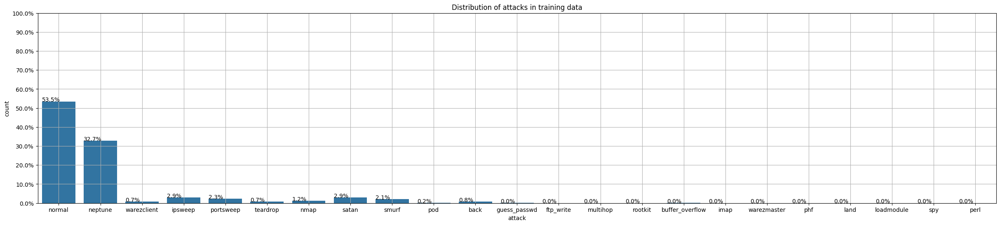
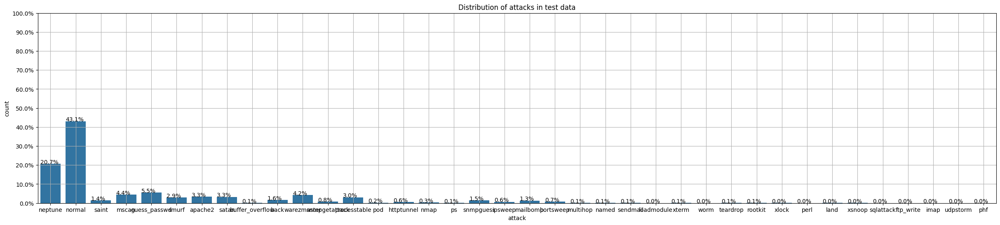
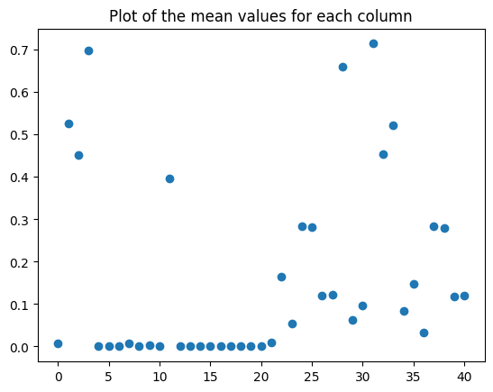
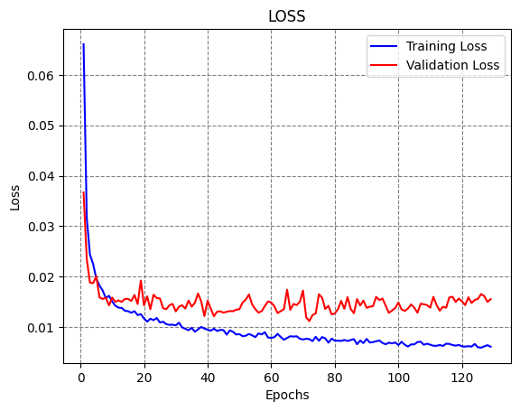
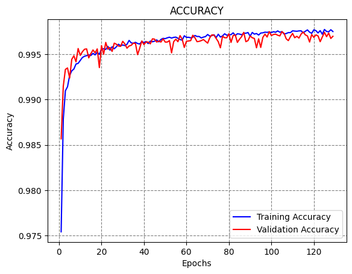

from google.colab import drive
drive.mount('/content/drive')Mounted at /content/drivefrom google.colab import drive
drive.mount('/content/drive')Mounted at /content/drivepip install adversarial-robustness-toolboxCollecting adversarial-robustness-toolbox Downloading adversarial_robustness_toolbox-1.19.1-py3-none-any.whl.metadata (11 kB) Requirement already satisfied: numpy>=1.18.0 in /usr/local/lib/python3.11/dist-packages (from adversarial-robustness-toolbox) (2.0.2) Requirement already satisfied: scipy>=1.4.1 in /usr/local/lib/python3.11/dist-packages (from adversarial-robustness-toolbox) (1.14.1) Requirement already satisfied: scikit-learn>=0.22.2 in /usr/local/lib/python3.11/dist-packages (from adversarial-robustness-toolbox) (1.6.1) Requirement already satisfied: six in /usr/local/lib/python3.11/dist-packages (from adversarial-robustness-toolbox) (1.17.0) Requirement already satisfied: setuptools in /usr/local/lib/python3.11/dist-packages (from adversarial-robustness-toolbox) (75.1.0) Requirement already satisfied: tqdm in /usr/local/lib/python3.11/dist-packages (from adversarial-robustness-toolbox) (4.67.1) Requirement already satisfied: joblib>=1.2.0 in /usr/local/lib/python3.11/dist-packages (from scikit-learn>=0.22.2->adversarial-robustness-toolbox) (1.4.2) Requirement already satisfied: threadpoolctl>=3.1.0 in /usr/local/lib/python3.11/dist-packages (from scikit-learn>=0.22.2->adversarial-robustness-toolbox) (3.6.0) Downloading adversarial_robustness_toolbox-1.19.1-py3-none-any.whl (1.7 MB) ━━━━━━━━━━━━━━━━━━━━━━━━━━━━━━━━━━━━━━━━ 1.7/1.7 MB 16.8 MB/s eta 0:00:00 Installing collected packages: adversarial-robustness-toolbox Successfully installed adversarial-robustness-toolbox-1.19.1
import numpy as np
import pandas as pd
import matplotlib.pyplot as plt
from sklearn.preprocessing import MinMaxScaler
import seaborn as sns# Data directory for NSL-KDD dataset
data_path = "drive/MyDrive/AML_Course/Spring_2025/Other_Codes/Intrusion_Detection/"# Load the data into pandas dataframes
train_df = pd.read_csv(data_path + "KDDTrain+.csv")
test_df = pd.read_csv(data_path + "KDDTest+.csv")
# Print the first 5 rows of the train data
train_df.head()| duration | protocol_type | service | flag | src_bytes | dst_bytes | land | wrong_fragment | urgent | hot | ... | dst_host_diff_srv_rate | dst_host_same_src_port_rate | dst_host_srv_diff_host_rate | dst_host_serror_rate | dst_host_srv_serror_rate | dst_host_rerror_rate | dst_host_srv_rerror_rate | attack | attack score | label | |
|---|---|---|---|---|---|---|---|---|---|---|---|---|---|---|---|---|---|---|---|---|---|
| 0 | 0 | tcp | ftp_data | SF | 491 | 0 | 0 | 0 | 0 | 0 | ... | 0.03 | 0.17 | 0.00 | 0.00 | 0.00 | 0.05 | 0.00 | normal | 20 | 0 |
| 1 | 0 | udp | other | SF | 146 | 0 | 0 | 0 | 0 | 0 | ... | 0.60 | 0.88 | 0.00 | 0.00 | 0.00 | 0.00 | 0.00 | normal | 15 | 0 |
| 2 | 0 | tcp | private | S0 | 0 | 0 | 0 | 0 | 0 | 0 | ... | 0.05 | 0.00 | 0.00 | 1.00 | 1.00 | 0.00 | 0.00 | neptune | 19 | 1 |
| 3 | 0 | tcp | http | SF | 232 | 8153 | 0 | 0 | 0 | 0 | ... | 0.00 | 0.03 | 0.04 | 0.03 | 0.01 | 0.00 | 0.01 | normal | 21 | 0 |
| 4 | 0 | tcp | http | SF | 199 | 420 | 0 | 0 | 0 | 0 | ... | 0.00 | 0.00 | 0.00 | 0.00 | 0.00 | 0.00 | 0.00 | normal | 21 | 0 |
5 rows × 44 columns
print("Shape of the training data", train_df.shape)
print("Number of data points", train_df.shape[0])
print("Number of features",train_df.shape[1])Shape of the training data (125973, 44)
Number of data points 125973
Number of features 44print("Shape of the testing data", test_df.shape)
print("Number of data points", test_df.shape[0])
print("Number of features",test_df.shape[1])Shape of the testing data (22544, 44)
Number of data points 22544
Number of features 44# Plot the distributions of normal class 0 and attack class 1
plt.figure(figsize=(12,6))
plt.subplot(1,2,1)
sns.countplot(x ='label' , data =train_df, hue='label')
plt.title("Normal and attack distribution in the train data")
plt.grid()
plt.subplot(1,2,2)
sns.countplot(x ='label' , data=test_df, hue ='label')
plt.title("Normal and attack distribution in the test data")
plt.grid()
plt.show()
# Plot the distribution of all attacks in the train data
f, ax = plt.subplots(figsize=(30,6))
# Plot the data counts per attack (there are 23 attack classes)
ax = sns.countplot(x="attack", data=train_df)
# The total number of rows
total = len(train_df) * 1
# Plot bars for each attack
for p in ax.patches:
ax.annotate('{:.1f}%'.format(100*p.get_height()/total), (p.get_x(), p.get_height()))
# Set axis ticks and thicklabels
ax.yaxis.set_ticks(np.linspace(0, total, 11))
ax.set_yticklabels(map('{:.1f}%'.format, 100*ax.yaxis.get_majorticklocs()/total))
plt.title("Distribution of attacks in training data")
plt.grid()
plt.show()
# And plot the distribution of all attacks in the test data
f, ax = plt.subplots(figsize=(30,6))
# Plot the data counts per attack (there are 23 attack classes)
ax = sns.countplot(x="attack", data=test_df)
# The total number of rows
total = len(test_df) * 1
# Plot bars for each attack
for p in ax.patches:
ax.annotate('{:.1f}%'.format(100*p.get_height()/total), (p.get_x(), p.get_height()))
# Set axis ticks and thicklabels
ax.yaxis.set_ticks(np.linspace(0, total, 11))
ax.set_yticklabels(map('{:.1f}%'.format, 100*ax.yaxis.get_majorticklocs()/total))
plt.title("Distribution of attacks in test data")
plt.grid()
plt.show()
# Print the sorted number of datapoints belonging to each attack class
train_class_distribution = train_df['attack'].value_counts()
# Sorting them in decreasing order (by number of datapoints)
sorted_yi = np.argsort(-train_class_distribution.values)
# Printing the number of datapoints and the percetange
for i in sorted_yi:
print('Number of data points in class', i+1, ':',train_class_distribution.values[i], '(', np.round((train_class_distribution.values[i]/len(train_df)*100), 3), '%)')Number of data points in class 1 : 67343 ( 53.458 %)
Number of data points in class 2 : 41214 ( 32.717 %)
Number of data points in class 3 : 3633 ( 2.884 %)
Number of data points in class 4 : 3599 ( 2.857 %)
Number of data points in class 5 : 2931 ( 2.327 %)
Number of data points in class 6 : 2646 ( 2.1 %)
Number of data points in class 7 : 1493 ( 1.185 %)
Number of data points in class 8 : 956 ( 0.759 %)
Number of data points in class 9 : 892 ( 0.708 %)
Number of data points in class 10 : 890 ( 0.707 %)
Number of data points in class 11 : 201 ( 0.16 %)
Number of data points in class 12 : 53 ( 0.042 %)
Number of data points in class 13 : 30 ( 0.024 %)
Number of data points in class 14 : 20 ( 0.016 %)
Number of data points in class 15 : 18 ( 0.014 %)
Number of data points in class 16 : 11 ( 0.009 %)
Number of data points in class 17 : 10 ( 0.008 %)
Number of data points in class 18 : 9 ( 0.007 %)
Number of data points in class 19 : 8 ( 0.006 %)
Number of data points in class 20 : 7 ( 0.006 %)
Number of data points in class 21 : 4 ( 0.003 %)
Number of data points in class 22 : 3 ( 0.002 %)
Number of data points in class 23 : 2 ( 0.002 %)# Repeat the same for the test data
test_class_distribution = test_df['attack'].value_counts()
# Sorting them in decreasing order (by number of datapoints)
sorted_yi = np.argsort(-test_class_distribution.values)
# Printing the number of datapoints and the percetange
for i in sorted_yi:
print('Number of data points in class', i+1, ':',test_class_distribution.values[i], '(', np.round((test_class_distribution.values[i]/len(test_df)*100), 3), '%)')Number of data points in class 1 : 9711 ( 43.076 %)
Number of data points in class 2 : 4657 ( 20.657 %)
Number of data points in class 3 : 1231 ( 5.46 %)
Number of data points in class 4 : 996 ( 4.418 %)
Number of data points in class 5 : 944 ( 4.187 %)
Number of data points in class 6 : 737 ( 3.269 %)
Number of data points in class 7 : 735 ( 3.26 %)
Number of data points in class 8 : 685 ( 3.039 %)
Number of data points in class 9 : 665 ( 2.95 %)
Number of data points in class 10 : 359 ( 1.592 %)
Number of data points in class 11 : 331 ( 1.468 %)
Number of data points in class 12 : 319 ( 1.415 %)
Number of data points in class 13 : 293 ( 1.3 %)
Number of data points in class 14 : 178 ( 0.79 %)
Number of data points in class 15 : 157 ( 0.696 %)
Number of data points in class 16 : 141 ( 0.625 %)
Number of data points in class 17 : 133 ( 0.59 %)
Number of data points in class 18 : 73 ( 0.324 %)
Number of data points in class 19 : 41 ( 0.182 %)
Number of data points in class 20 : 20 ( 0.089 %)
Number of data points in class 21 : 18 ( 0.08 %)
Number of data points in class 22 : 17 ( 0.075 %)
Number of data points in class 23 : 15 ( 0.067 %)
Number of data points in class 24 : 14 ( 0.062 %)
Number of data points in class 25 : 13 ( 0.058 %)
Number of data points in class 26 : 13 ( 0.058 %)
Number of data points in class 27 : 12 ( 0.053 %)
Number of data points in class 28 : 9 ( 0.04 %)
Number of data points in class 29 : 7 ( 0.031 %)
Number of data points in class 30 : 4 ( 0.018 %)
Number of data points in class 31 : 3 ( 0.013 %)
Number of data points in class 32 : 2 ( 0.009 %)
Number of data points in class 33 : 2 ( 0.009 %)
Number of data points in class 34 : 2 ( 0.009 %)
Number of data points in class 35 : 2 ( 0.009 %)
Number of data points in class 36 : 2 ( 0.009 %)
Number of data points in class 37 : 2 ( 0.009 %)
Number of data points in class 38 : 1 ( 0.004 %)# The dataset have attacks that are present in the test set and not in the train set
# Print those attacks
trn = set(train_df['attack'].unique())
tst = set(test_df['attack'].unique())
extra = tst - trn
print(extra)
print("*"*100)
print("Number of extra attacks that are present only in the test set:", len(extra)){'udpstorm', 'httptunnel', 'worm', 'ps', 'xterm', 'xsnoop', 'mscan', 'snmpguess', 'apache2', 'xlock', 'sendmail', 'snmpgetattack', 'sqlattack', 'processtable', 'mailbomb', 'named', 'saint'}
****************************************************************************************************
Number of extra attacks that are present only in the test set: 17# Display the columns and the datatype for each column
train_df.info()<class 'pandas.core.frame.DataFrame'>
RangeIndex: 125973 entries, 0 to 125972
Data columns (total 44 columns):
# Column Non-Null Count Dtype
--- ------ -------------- -----
0 duration 125973 non-null int64
1 protocol_type 125973 non-null object
2 service 125973 non-null object
3 flag 125973 non-null object
4 src_bytes 125973 non-null int64
5 dst_bytes 125973 non-null int64
6 land 125973 non-null int64
7 wrong_fragment 125973 non-null int64
8 urgent 125973 non-null int64
9 hot 125973 non-null int64
10 num_failed_logins 125973 non-null int64
11 logged_in 125973 non-null int64
12 num_compromised 125973 non-null int64
13 root_shell 125973 non-null int64
14 su_attempted 125973 non-null int64
15 num_root 125973 non-null int64
16 num_file_creations 125973 non-null int64
17 num_shells 125973 non-null int64
18 num_access_files 125973 non-null int64
19 num_outbound_cmds 125973 non-null int64
20 is_host_login 125973 non-null int64
21 is_guest_login 125973 non-null int64
22 count 125973 non-null int64
23 srv_count 125973 non-null int64
24 serror_rate 125973 non-null float64
25 srv_serror_rate 125973 non-null float64
26 rerror_rate 125973 non-null float64
27 srv_rerror_rate 125973 non-null float64
28 same_srv_rate 125973 non-null float64
29 diff_srv_rate 125973 non-null float64
30 srv_diff_host_rate 125973 non-null float64
31 dst_host_count 125973 non-null int64
32 dst_host_srv_count 125973 non-null int64
33 dst_host_same_srv_rate 125973 non-null float64
34 dst_host_diff_srv_rate 125973 non-null float64
35 dst_host_same_src_port_rate 125973 non-null float64
36 dst_host_srv_diff_host_rate 125973 non-null float64
37 dst_host_serror_rate 125973 non-null float64
38 dst_host_srv_serror_rate 125973 non-null float64
39 dst_host_rerror_rate 125973 non-null float64
40 dst_host_srv_rerror_rate 125973 non-null float64
41 attack 125973 non-null object
42 attack score 125973 non-null int64
43 label 125973 non-null int64
dtypes: float64(15), int64(25), object(4)
memory usage: 42.3+ MB# Convert the columns with categorical values into numerical values
from sklearn.preprocessing import OrdinalEncoder
categs_feats = train_df[['protocol_type', 'service', 'flag', 'attack']]
encoder = OrdinalEncoder()
categs_encoded = encoder.fit_transform(categs_feats)train_df[['protocol_type', 'service', 'flag', 'attack']] = pd.DataFrame(categs_encoded, columns=categs_feats.columns, index=categs_feats.index)
train_df.head()| duration | protocol_type | service | flag | src_bytes | dst_bytes | land | wrong_fragment | urgent | hot | ... | dst_host_diff_srv_rate | dst_host_same_src_port_rate | dst_host_srv_diff_host_rate | dst_host_serror_rate | dst_host_srv_serror_rate | dst_host_rerror_rate | dst_host_srv_rerror_rate | attack | attack score | label | |
|---|---|---|---|---|---|---|---|---|---|---|---|---|---|---|---|---|---|---|---|---|---|
| 0 | 0 | 1.0 | 20.0 | 9.0 | 491 | 0 | 0 | 0 | 0 | 0 | ... | 0.03 | 0.17 | 0.00 | 0.00 | 0.00 | 0.05 | 0.00 | 11.0 | 20 | 0 |
| 1 | 0 | 2.0 | 44.0 | 9.0 | 146 | 0 | 0 | 0 | 0 | 0 | ... | 0.60 | 0.88 | 0.00 | 0.00 | 0.00 | 0.00 | 0.00 | 11.0 | 15 | 0 |
| 2 | 0 | 1.0 | 49.0 | 5.0 | 0 | 0 | 0 | 0 | 0 | 0 | ... | 0.05 | 0.00 | 0.00 | 1.00 | 1.00 | 0.00 | 0.00 | 9.0 | 19 | 1 |
| 3 | 0 | 1.0 | 24.0 | 9.0 | 232 | 8153 | 0 | 0 | 0 | 0 | ... | 0.00 | 0.03 | 0.04 | 0.03 | 0.01 | 0.00 | 0.01 | 11.0 | 21 | 0 |
| 4 | 0 | 1.0 | 24.0 | 9.0 | 199 | 420 | 0 | 0 | 0 | 0 | ... | 0.00 | 0.00 | 0.00 | 0.00 | 0.00 | 0.00 | 0.00 | 11.0 | 21 | 0 |
5 rows × 44 columns
# Create a training dataset
X_train = train_df.drop(['attack', 'attack score', 'label'], axis=1)
y_train = train_df['label']# Repeat the same for the test dataset
test_df.info()<class 'pandas.core.frame.DataFrame'>
RangeIndex: 22544 entries, 0 to 22543
Data columns (total 44 columns):
# Column Non-Null Count Dtype
--- ------ -------------- -----
0 duration 22544 non-null int64
1 protocol_type 22544 non-null object
2 service 22544 non-null object
3 flag 22544 non-null object
4 src_bytes 22544 non-null int64
5 dst_bytes 22544 non-null int64
6 land 22544 non-null int64
7 wrong_fragment 22544 non-null int64
8 urgent 22544 non-null int64
9 hot 22544 non-null int64
10 num_failed_logins 22544 non-null int64
11 logged_in 22544 non-null int64
12 num_compromised 22544 non-null int64
13 root_shell 22544 non-null int64
14 su_attempted 22544 non-null int64
15 num_root 22544 non-null int64
16 num_file_creations 22544 non-null int64
17 num_shells 22544 non-null int64
18 num_access_files 22544 non-null int64
19 num_outbound_cmds 22544 non-null int64
20 is_host_login 22544 non-null int64
21 is_guest_login 22544 non-null int64
22 count 22544 non-null int64
23 srv_count 22544 non-null int64
24 serror_rate 22544 non-null float64
25 srv_serror_rate 22544 non-null float64
26 rerror_rate 22544 non-null float64
27 srv_rerror_rate 22544 non-null float64
28 same_srv_rate 22544 non-null float64
29 diff_srv_rate 22544 non-null float64
30 srv_diff_host_rate 22544 non-null float64
31 dst_host_count 22544 non-null int64
32 dst_host_srv_count 22544 non-null int64
33 dst_host_same_srv_rate 22544 non-null float64
34 dst_host_diff_srv_rate 22544 non-null float64
35 dst_host_same_src_port_rate 22544 non-null float64
36 dst_host_srv_diff_host_rate 22544 non-null float64
37 dst_host_serror_rate 22544 non-null float64
38 dst_host_srv_serror_rate 22544 non-null float64
39 dst_host_rerror_rate 22544 non-null float64
40 dst_host_srv_rerror_rate 22544 non-null float64
41 attack 22544 non-null object
42 attack score 22544 non-null int64
43 label 22544 non-null int64
dtypes: float64(15), int64(25), object(4)
memory usage: 7.6+ MBcategs_feats = test_df[['protocol_type', 'service', 'flag', 'attack']]
encoder = OrdinalEncoder()
categs_encoded = encoder.fit_transform(categs_feats)test_df[['protocol_type', 'service', 'flag', 'attack']] = pd.DataFrame(categs_encoded, columns=categs_feats.columns, index=categs_feats.index)
test_df.head()| duration | protocol_type | service | flag | src_bytes | dst_bytes | land | wrong_fragment | urgent | hot | ... | dst_host_diff_srv_rate | dst_host_same_src_port_rate | dst_host_srv_diff_host_rate | dst_host_serror_rate | dst_host_srv_serror_rate | dst_host_rerror_rate | dst_host_srv_rerror_rate | attack | attack score | label | |
|---|---|---|---|---|---|---|---|---|---|---|---|---|---|---|---|---|---|---|---|---|---|
| 0 | 0 | 1.0 | 45.0 | 1.0 | 0 | 0 | 0 | 0 | 0 | 0 | ... | 0.06 | 0.00 | 0.00 | 0.0 | 0.0 | 1.00 | 1.00 | 14.0 | 21 | 1 |
| 1 | 0 | 1.0 | 45.0 | 1.0 | 0 | 0 | 0 | 0 | 0 | 0 | ... | 0.06 | 0.00 | 0.00 | 0.0 | 0.0 | 1.00 | 1.00 | 14.0 | 21 | 1 |
| 2 | 2 | 1.0 | 19.0 | 9.0 | 12983 | 0 | 0 | 0 | 0 | 0 | ... | 0.04 | 0.61 | 0.02 | 0.0 | 0.0 | 0.00 | 0.00 | 16.0 | 21 | 0 |
| 3 | 0 | 0.0 | 13.0 | 9.0 | 20 | 0 | 0 | 0 | 0 | 0 | ... | 0.00 | 1.00 | 0.28 | 0.0 | 0.0 | 0.00 | 0.00 | 24.0 | 15 | 1 |
| 4 | 1 | 1.0 | 55.0 | 2.0 | 0 | 15 | 0 | 0 | 0 | 0 | ... | 0.17 | 0.03 | 0.02 | 0.0 | 0.0 | 0.83 | 0.71 | 11.0 | 11 | 1 |
5 rows × 44 columns
# Create a test dataset
X_test = test_df.drop(['attack', 'attack score', 'label'], axis=1)
y_test = test_df['label']# Standardize features by scaling each feature to range [0, 1]
scaler = MinMaxScaler()
X_train = scaler.fit_transform(X_train)
X_test = scaler.transform(X_test)# Note: the variables are now numpy arrays, and not pandas dataframes
print('Data type:', type(X_train))
# Display the shapes of train and test datasets
print('\nTrain shape: {}'.format(X_train.shape))
print('Test shape: {}'.format(X_test.shape))
# Display the range to make sure they are in the [0, 1] range
print('\nMax value', np.max(X_train))
print('Min value', np.min(X_train))
print('Average value', np.mean(X_train))Data type: <class 'numpy.ndarray'>
Train shape: (125973, 41)
Test shape: (22544, 41)
Max value 1.0
Min value 0.0
Average value 0.16355979490070746# Let's examine the mean values for each of the columns
plt.plot(np.mean(X_train, axis=0), 'o')
plt.title("Plot of the mean values for each column")
plt.show()
from sklearn.svm import SVC
from sklearn.linear_model import LogisticRegression
from sklearn.tree import DecisionTreeClassifier
from sklearn.ensemble import RandomForestClassifier
from sklearn import neighbors
from sklearn.naive_bayes import GaussianNBprint('LOGISTIC REGRESSION')
model_lr = LogisticRegression()
model_lr.fit(X_train, y_train)
print('Accuracy:', model_lr.score(X_test, y_test))LOGISTIC REGRESSION
Accuracy: 0.7538591199432222print('*** RANDOM FOREST ***')
model_rf = RandomForestClassifier(verbose=0, warm_start=True)
model_rf.fit(X_train, y_train)
print('Accuracy:', model_rf.score(X_test, y_test))*** RANDOM FOREST ***
Accuracy: 0.7644606103619588print('*** DECISION TREE ***')
model_dt = DecisionTreeClassifier()
model_dt.fit(X_train, y_train)
print('Accuracy:', model_dt.score(X_test, y_test))*** DECISION TREE ***
Accuracy: 0.7943133427963094import tensorflow
from tensorflow.keras.models import Model
from tensorflow.keras.layers import Input, Dense, Dropout
from keras.optimizers import Adam
from tensorflow.keras.callbacks import EarlyStopping
import datetime
now = datetime.datetime.now# Define the layers for the network
input_seq = Input(shape=(41,))
hidden = Dense(1024, activation='relu')(input_seq)
hidden = Dropout(0.25)(hidden)
hidden = Dense(512, activation='relu')(hidden)
hidden = Dropout(0.25)(hidden)
hidden = Dense(256, activation='relu')(hidden)
hidden = Dropout(0.25)(hidden)
predictions = Dense(2, activation='softmax')(hidden)
# The model
model = Model(inputs=input_seq, outputs=predictions)model.compile(optimizer=Adam(learning_rate = 1e-3), loss='sparse_categorical_crossentropy', metrics=['accuracy'])# Fit model
t = now()
callbacks = [EarlyStopping(monitor='val_accuracy', patience=30)]
history = model.fit(X_train, y_train, batch_size=256, epochs=300,
validation_split=0.2, verbose=0, callbacks=callbacks)
print('Training time: %s' % (now() - t))
# Plot the loss and accuracy
train_loss = history.history['loss']
val_loss = history.history['val_loss']
acc = history.history['accuracy']
val_acc = history.history['val_accuracy']
epochsn = np.arange(1, len(train_loss)+1,1)
plt.plot(epochsn,train_loss, 'b', label='Training Loss')
plt.plot(epochsn,val_loss, 'r', label='Validation Loss')
plt.grid(color='gray', linestyle='--')
plt.legend()
plt.title('LOSS')
plt.xlabel('Epochs')
plt.ylabel('Loss')
plt.figure()
plt.plot(epochsn, acc, 'b', label='Training Accuracy')
plt.plot(epochsn, val_acc, 'r', label='Validation Accuracy')
plt.grid(color='gray', linestyle='--')
plt.legend()
plt.title('ACCURACY')
plt.xlabel('Epochs')
plt.ylabel('Accuracy')
plt.show()Training time: 0:02:42.719525

# Evaluate on test data
evals_test = model.evaluate(X_test, y_test)
print("Classification Accuracy: ", evals_test[1])705/705 ━━━━━━━━━━━━━━━━━━━━ 2s 2ms/step - accuracy: 0.7978 - loss: 3.5358 Classification Accuracy: 0.7928051948547363
# Creating adversarial test sets of 1000 samples
# Define a random seed (to draw the same smamples)
np.random.seed(2)
ind = np.random.randint(1, 20000, 1000)
# Set of image for testing the attacks
adv_test_data = X_test[ind]
adv_test_labels = y_test[ind]from art.estimators.classification import TensorFlowV2Classifier
from art.attacks.evasion import FastGradientMethodclassifier = TensorFlowV2Classifier(model=model, nb_classes=2,
clip_values=(0, 1), input_shape=(41,), loss_object=tensorflow.keras.losses.SparseCategoricalCrossentropy())# FGSM attack
epsilon = [0.01, 0.025, 0.05, 0.1, 0.2, 0.3, 0.5, 0.8]
fgsm_attack_acc = []
for eps in epsilon:
attack_fgsm = FastGradientMethod(estimator=classifier, eps=eps)
fgsm_attack_adv_data = attack_fgsm.generate(adv_test_data)
loss_test, accuracy_test = model.evaluate(fgsm_attack_adv_data, adv_test_labels)
fgsm_attack_acc.append(accuracy_test)
perturbation = np.mean(np.abs((fgsm_attack_adv_data - adv_test_data)))
print('Accuracy on adversarial test data: {:4.2f}%'.format(accuracy_test * 100))
print('Average perturbation: {:4.2f}'.format(perturbation))32/32 ━━━━━━━━━━━━━━━━━━━━ 0s 14ms/step - accuracy: 0.7793 - loss: 1.7254 Accuracy on adversarial test data: 78.00% Average perturbation: 0.00 32/32 ━━━━━━━━━━━━━━━━━━━━ 0s 2ms/step - accuracy: 0.6847 - loss: 3.1261 Accuracy on adversarial test data: 70.10% Average perturbation: 0.01 32/32 ━━━━━━━━━━━━━━━━━━━━ 0s 2ms/step - accuracy: 0.6252 - loss: 5.0684 Accuracy on adversarial test data: 63.80% Average perturbation: 0.02 32/32 ━━━━━━━━━━━━━━━━━━━━ 0s 2ms/step - accuracy: 0.5230 - loss: 9.5296 Accuracy on adversarial test data: 54.30% Average perturbation: 0.05 32/32 ━━━━━━━━━━━━━━━━━━━━ 0s 2ms/step - accuracy: 0.4653 - loss: 18.8675 Accuracy on adversarial test data: 48.00% Average perturbation: 0.09 32/32 ━━━━━━━━━━━━━━━━━━━━ 0s 3ms/step - accuracy: 0.4701 - loss: 30.8071 Accuracy on adversarial test data: 48.70% Average perturbation: 0.14 32/32 ━━━━━━━━━━━━━━━━━━━━ 0s 2ms/step - accuracy: 0.4781 - loss: 65.6533 Accuracy on adversarial test data: 49.50% Average perturbation: 0.22 32/32 ━━━━━━━━━━━━━━━━━━━━ 0s 2ms/step - accuracy: 0.4668 - loss: 142.5560 Accuracy on adversarial test data: 49.20% Average perturbation: 0.35
# Create adversarail samples and display them
attack_fgsm = FastGradientMethod(estimator=classifier, eps=0.1)
fgsm_attack_adv_data = attack_fgsm.generate(adv_test_data)
np.set_printoptions(precision=2, suppress=True)
print("First test example:", adv_test_data[0])
print("\nFirst advesarial example:", fgsm_attack_adv_data[0])First test example: [0. 1. 0.16 0.9 0. 0. 0. 0. 0. 0. 0. 0. 0. 0.
0. 0. 0. 0. 0. 0. 0. 0. 0. 0. 0. 0. 0. 0.
1. 0. 0. 0.11 0.83 0.79 0.07 0.79 0.01 0. 0. 0.21 0. ]
First advesarial example: [0. 0.9 0.26 0.8 0.1 0.1 0.1 0.1 0.1 0.1 0.1 0.1 0.1 0.
0. 0. 0.1 0. 0.1 0.1 0.1 0.1 0.1 0.1 0. 0.1 0.1 0.1
0.9 0.1 0.1 0.21 0.73 0.69 0.17 0.89 0.11 0.1 0.1 0.11 0. ]# Second adversarial sample
np.set_printoptions(precision=2, suppress=True)
print("Second test example:", adv_test_data[1])
print("\nSecond advesarial example:", fgsm_attack_adv_data[1])Second test example: [0. 1. 0.16 0.9 0. 0. 0. 0. 0. 0. 0. 0. 0. 0.
0. 0. 0. 0. 0. 0. 0. 0. 0.01 0.01 0. 0. 0. 0.
1. 0. 0.43 1. 0.99 0.99 0.01 0. 0. 0. 0. 0. 0. ]
Second advesarial example: [0. 0.9 0.26 0.8 0.1 0.1 0.1 0.1 0.1 0.1 0.1 0.1 0.1 0.
0. 0. 0.1 0. 0.1 0.1 0. 0.1 0.11 0. 0. 0. 0.1 0.1
0.9 0.1 0.33 1. 0.89 1. 0.11 0.1 0.1 0.1 0.1 0.1 0.1 ]